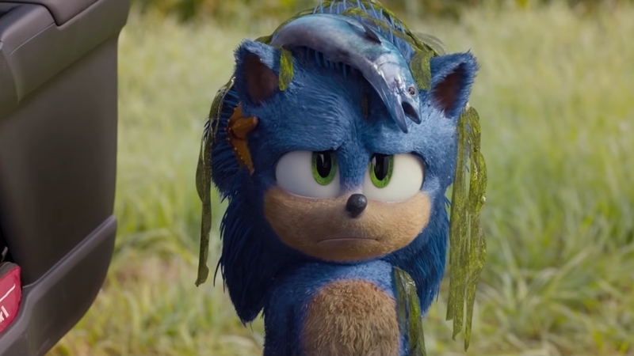

Sonic Review
Yes it could have been better, but it deserves some praise for responding to audience feedback
By Peter Kaminski

In the software industry, it isn’t uncommon for companies to validate new features and products before giving them the green-light. Before devoting months of time and hundreds of thousands of dollars to build something new, its important to throw together a cheap prototype, put it in front of customers, and see if they like it. We call it user testing.
User testing isn’t a new concept; as a matter of fact, its been a common practice for movie studios dating back to 1928!. When I was in college, I got invited by a friend to a test screening of Crazy Rich Asians at Warner Bros., and it was honestly difficult for me to tell the movie wasn’t ready for release, other than the yet-to-be-CGI’d plane that appeared mid-movie. After watching the film, we were given a brief survey, asking us for our thoughts on the story and the characters. I still haven’t seen the final cut of Crazy Rich Asians, so I don’t know if they took any of my feedback to heart. (If you did see it and you have no idea what plane I’m talking about, good—that means they fixed it in post).
As producer Tim Bevan said, “99.9 times out of 100 the audience will speak louder than anybody else.” Boy oh boy, did the audience speak when the first trailer for Sonic dropped back in April. If you were blissfully unaware that our furry little hedgehog friend had received a makeover between now and then, well, let me ruin your day for you.

The first draft of Sonic was terrifying! So terrifying, that within days director Jeff Fowler had to apologize publicly on Twitter and reassure children and adults alike that their beloved blue friend would receive a much needed makeover.
I’ve got two words for you Jeff: user testing! Listen, I know the movie business isn’t the tech industry, but I refuse to believe this is Paramount Studio’s first rodeo. It’s unfathomable to think the original trailer would be dropped to the public without first screening it to a smaller, private audience.
In 2020, we live in a world where audience reception, largely driven by the angry masses on social media, has started to impact the movies we see on the big screen. Look no further than Star Wars: The Rise of Skywalker, a movie that bull-dozed over all the creative decisions Rian Johnson made in Star Wars: The Last Jedi, attempting to retcon its way back into the good graces of a small, upset segment of the fanbase. When it comes to pleasing audiences, where do we draw the line?
While mistakes were made with the handling of Sonic’s original animations, I want to applaud Jeff Fowler, Paramount Studios, and the visual effects team for listening to the initial reaction of Sonic fans and going back to the drawing board to reimagine our furry, blue friend. Far from changing Sonic’s story to coalesce with the visions of a fanbase transcribed on Reddit, the changes that were made in response to audience feedback enhanced the overall quality of the movie—making it more enjoyable for everyone.
About that movie
I don’t see a lot of kids movies—I want to say Ralph Breaks the Internet was the last I’ve seen in theaters—but it became pretty evident to me that some kids movies are more enjoyable for adults than others (I’m imaging my parents reading this and rolling their eyes, recalling the time I dragged them to the theater on the opening night of The SpongeBob SquarePants Movie). I wouldn’t say Sonic was a waste of my precious free-time, but I do think there’s a lot to be said for movies that can, like the best of steganographers, encode adult humor within the fabric of a kids movie. We literally got a line of dialogue from Jim Carrey that went along the lines of “Look what came out of my egg sack.”
Speaking of Jim Carrey, as excited as I was to see him return to the big screen, I’ve got to say the man did not carry (Carrey?) his weight. Let Jim Carrey be weird, but also, let him be kind. I felt like his character lacked the usual empathy and warmth that his villains (think The Grinch or A Christmas Carol) typically bring to the table.
Most memorable song
Sonic’s soundtrack was composed by Junkie XL (Alita: Battle Angel, Batman v Superman: Dawn of Justice, Mad Max: Fury Road)
#movies #movie-reviews #2020-movies